!echo "Hello world" > test-file.txt
!cat test-file.txtHello worldBy the end of today’s lecture, you will learn:
“Cryptography is about communication in the presence of an adversary.”
– Prof. Ron Rivest
To protect data confidentiality, we built authenticated encryption in three steps.
The most common way to perform the first step is to use AES in Counter Mode.
XOR with the plaintextThe most popular authenticated encryption scheme used on the web is AES-GCM.

We have now discussed all of the foundational math assumptions that we will use in this course.
Symmetric key cryptography:
Public key cryptography:
Every cryptosystem that we build in this course – message commitment, digital signature, encryption, MAC, and more – can be proved to be secure based on one or more of these four assumptions.
Our goal for today is to study encryption of data on your computer or phone.
All major operating systems support disk encryption, often by default.
| Operating system | Product | On by default since… |
|---|---|---|
| Windows | Microsoft Bitlocker | Windows 8 (2012) |
| Mac OS X | Apple FileVault | OS X Yosemite 10.10 (2014) |
| Linux | Linux Unified Key Setup (luks) | |
| Multi OS 3rd party tools | VeraCrypt, SecureDoc, … | |
| iOS | [built into OS] | iOS 8 (2013) |
| Android | [built into OS] | Android 6.0 (2015) |
| Alice | Mallory | Future Alice | ||
|---|---|---|---|---|

|
\(\longrightarrow\) |

|
\(\longrightarrow\) |
|
Our objective is to protect data confidentiality against an adversary Mallory who temporarily obtains physical access to Alice’s computer or phone.
Alice’s actions
Mallory’s capabilities
Our objective: even with these powers, Mallory still cannot
Non-objective: Mallory can replay earlier contents of the hard drive. We will not be able to use crypto to stop this.
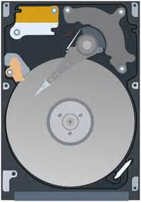
We will consider two options.
In both cases, it is critical that the crypto is fast. We must:
This is one reason why all modern computers have dedicated hardware instructions to execute AES.
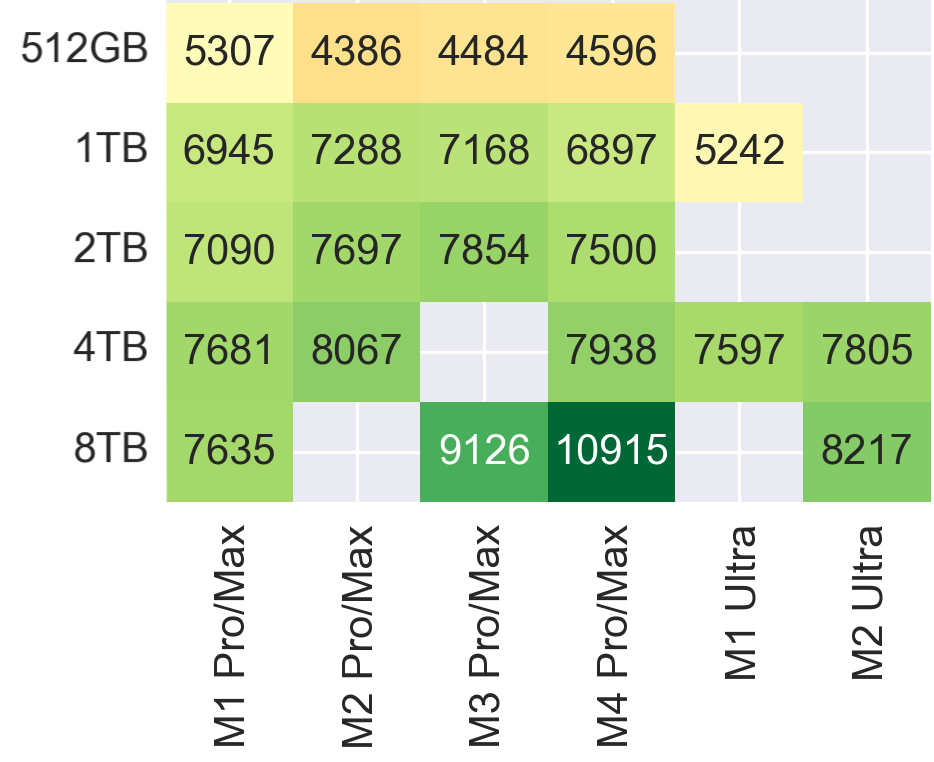
Imagine you are the manufacturer of the hard drive and other hardware. Your goal is to build a cryptosystem that automatically encrypts the drive.
Example. Let’s explore how hard drives work.
!echo "Hello world" > test-file.txt
!cat test-file.txtHello world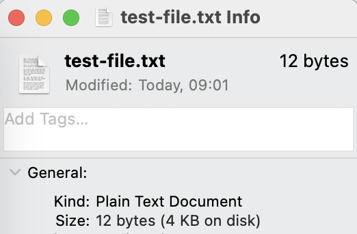
The basic unit of data within a hard drive is called a sector. Sectors have a fixed length specified by the drive manufacturer.
Here are the 4 types of hardware that we are going to consider today.
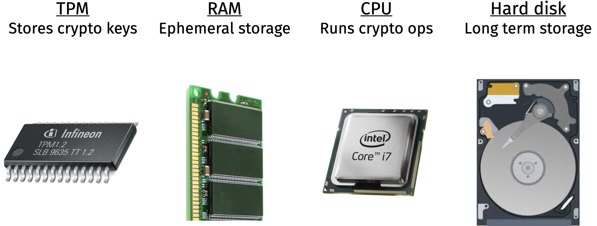
Remember that having the secret key gives someone the power to decrypt and read a message.
So: whenever you see encryption used in practice, you should ask how the keys are stored and protected.
Question. In sector-level encryption, where should we store the symmetric key?
An appealing, but ultimately incorrect, idea is to store the symmetric key in hard drive. After all, we already use the hard drive to store everything else.
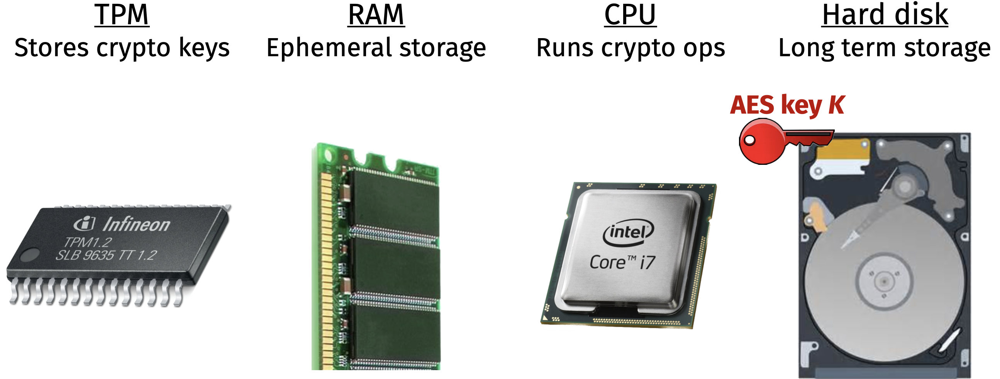
Question. Why is this a mistake?
Instead, a better workflow is to store the key in a tamper-resistant piece of hardware when the computer is off, and move the key into the RAM after the computer is turned on and the password is entered.
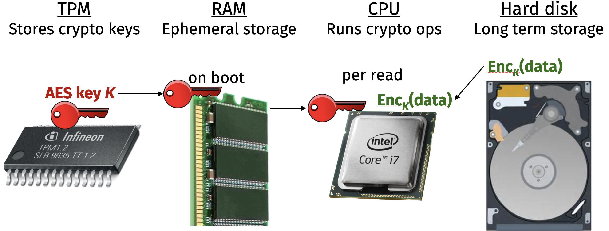
Interactive question. Suppose that Mallory steals your computer. With sector-level encryption, in which scenarios will your data remain confidential?
Sector-level encryption uses a special symmetric encryption scheme, called AES-XTS. Why is that?
Remember that encryption is all-or-nothing: if you have the keys, then you can read and edit the data. So, whenever encryption is used in practice, you should ask:
“Crypto is a tool for turning a whole swathe of problems into key management problems.”
– Lea Kissner (source)
Let’s discuss two cryptographic tools that are useful for key management: key derivation functions and key wrapping.
The Trusted Platform Module (TPM) does not actually store a cryptographic key. Instead, the TPM derives the symmetric key \(k\) at boot time from:
Importantly: when the device is powered off, it lacks the ability to derive its own secret key!
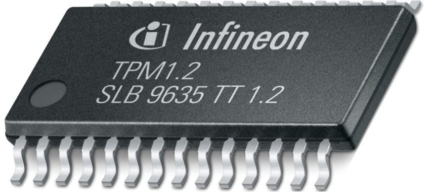
Recall from Unit 1 that we built a password hash function.
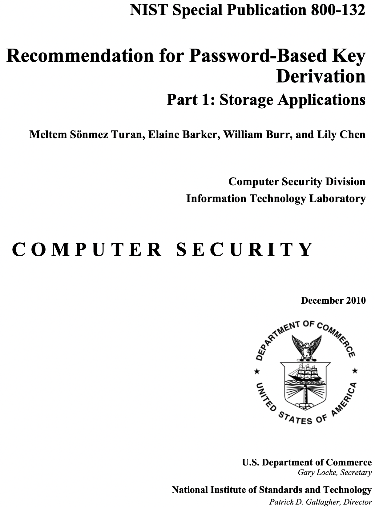
In today’s lecture, we want to do something even stronger.
This is the best way to derive symmetric keys from a non-interactive login procedure (i.e., on your computer, rather than a web server) because the device never stores its own long-term secrets.
/etc/passwdPBKDF2 uses a pseudorandom function (PRF) like AES or HMAC-SHA256, and it has four inputs.
The output is the symmetric key \(MK\).
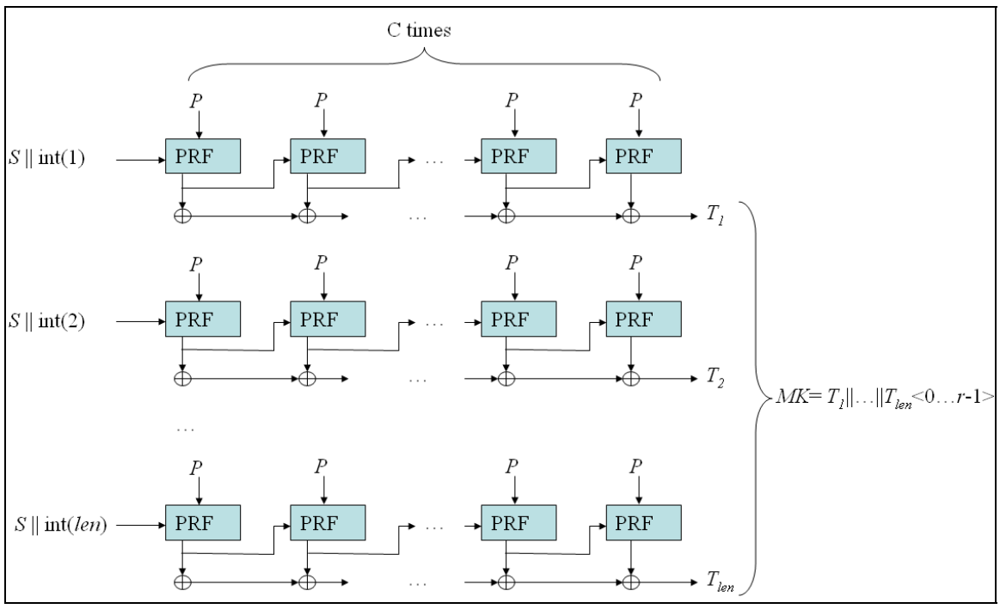
What if several keys should grant access to the data on the hard drive?
However, we do not want to encrypt the entire drive several times.
\[ \operatorname{Enc}_{\text{K1}}(\text{sector}) \quad \operatorname{Enc}_{\text{K2}}(\text{sector}) \quad \operatorname{Enc}_{\text{K3}}(\text{sector}) \]
Question. What can we do instead?
Key wrapping is a special kind of encryption that allows us to protect one key under another.
\[ \operatorname{Wrap}_{\text{K1}}(ek) \quad \operatorname{Wrap}_{\text{K2}}(ek) \quad \operatorname{Wrap}_{\text{K3}}(ek) \quad \operatorname{Enc}_{\text{ek}}(\text{sector}) \]
Key wrapping is built as follows:
There is a subtle reason that ordinary encryption does not work to protect secret keys.
Enc allows Mallory to encrypt any messages of her choice, and even then the next ciphertext still looks pseudorandomThere are two downsides to this approach:
Next, we will explore how modern operating systems encrypt data at the filesystem level. This approach is more flexible because we don’t have to fit the encrypted data back into a fixed-size sector.
As a case study, we will examine the design of Apple’s data encryption system on iPhones. This part of the lecture is based on the descriptions in Apple’s security guide.
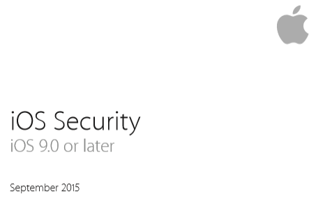
The core idea is: data should only be decryptable in the right context.
The iOS file-level encryption system uses a lot of symmetric keys.
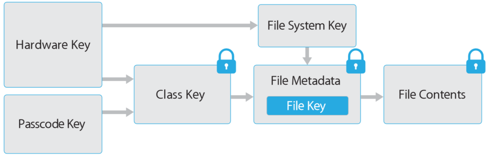
Let’s work our way through this image from right to left. There is (at least) one symmetric key for each file that is stored on the drive.
“Every time a file on the data volume is created, Data Protection creates a new 256-bit key (the per-file key) and gives it to the hardware AES Engine, which uses the key to encrypt the file as it’s being written to flash storage.
On A14 through A18 and M1 or later devices, the encryption uses AES-256 in XTS mode, where the 256-bit per-file-key goes through a Key Derivation Function (NIST Special Publication 800-108) to derive a 256-bit value and a 256-bit cipher key.”
– Apple Platform Security guide (link)
Since Apple controls both the software and hardware:
Moving left, each of the file keys is itself key-wrapped using a “class key,” which determines when the file needs to be readable and writable.
| Availability | Example | Key erased if phone is… |
|---|---|---|
| Always | SIM PIN | Wiped |
| After 1st unlock | WiFi password | Shut down |
| When unlocked | Browser bookmarks | 10s after unlock (without biometric) |
| When locked | Incoming email | (works differently) |
This keywrap goes in the file’s metadata. Whenever the file is read, the filesystem is designed to retrieve this metadata along with the encrypted file contents.
Question. How does the phone get the class keys?
Remember our mantra for today: derive keys rather than storing them! Once again we use keywrapping to protect the class keys with a passcode key that is derived from:
Note that there exist other ways to derive the class keys, in order to enable:
There are two countermeasures built into the phone in order to make brute forcing the PIN as difficult as possible.
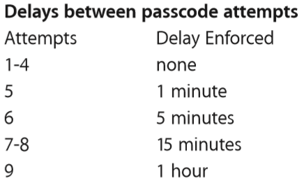
Interactive question. Suppose that an iPhone is turned completely off and back on again, but the passcode has not been entered. It turns out that the phone makes a cellular connection but will not connect to wifi. Why is that?
Remember that encryption is a powerful tool with immense social consequences.
“Cryptography rearranges power: it configures who can do what, from what.”
– Prof. Phillip Rogaway (UC Davis)
Let’s briefly discuss some of the legal questions raised by the use of encryption.
The latter question gained significant attention in early 2016, when the FBI wanted data on a locked iPhone 5c in its possession, but they did not have the PIN.
Remember that key = pbkdf2(pin, uid), so to read the files they could:
pin on the phone itself, oruid and then brute-force the pin on a faster computerFBI wanted Apple to modify its operating system to enable a brute-force search of the PINs:
Note: the iPhone 5c does not have a Secure Enclave, so its delay is software-enforced rather than hardware-enforced.
Question. If these are software-only protections, why couldn’t the FBI change the operating system code on its own?
Here we need to discuss the crypto used for updates to the operating system. Since the code itself is not a secret, the security goal in software updates is integrity.
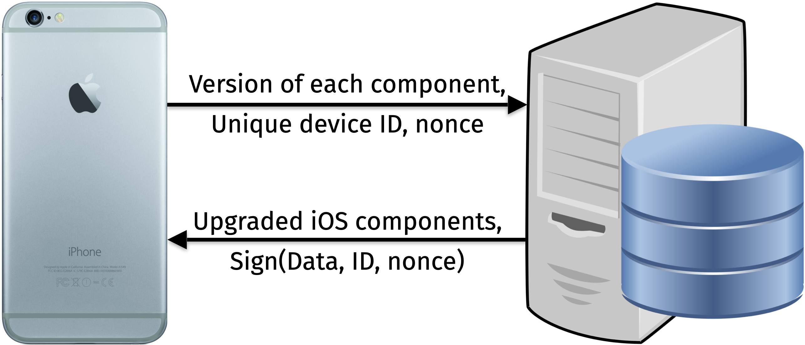
The server’s digital signature contains:
Many (though not all!) automatic software update systems for operating systems and individual programs work similarly.
The FBI wanted Apple to produce and digitally sign an updated “GovtOS” without the delay and poison pill. Only Apple could create this software update, or else the phone would reject it.
This court case was never fully resolved.
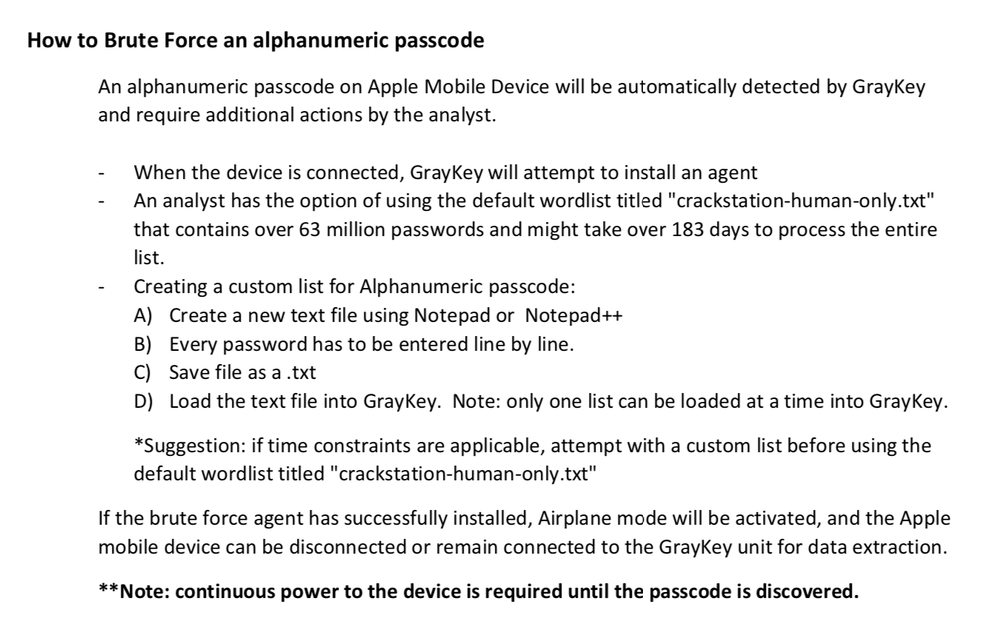
There has been a long-running debate for the past 50 years about government access to encrypted content. This is often informally referred to as the crypto wars.
In fact, there have been (at least) three distinct types of debates.
Key length: In the 1970s and 1980s, governments tried to build cryptosystems whose key length is short enough for them to brute-force but long enough that it would be onerous for anyone else to brute force
Key escrow: In the 1990s, governments tried to build cryptosystems where the encryption key was sent to a government server
Avoiding end-to-end encryption: As the Apple-FBI example shows, the current debate often involves the distinction between client-server encryption (where the tech company also has a copy of the key) or end-to-end encryption (where they don’t)
We will discuss more interactions between cryptography and the law toward the end of the semester.